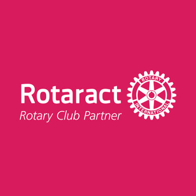

Om Running for Change
Rotaractklubbar i Sverige har arrangerat loppet Running for Change sedan 2009 med Hungerprojektet som förmånstagare. Numera arrangerar vi loppet tillsammans. I år går det av stapeln i Göteborg den 13 september. Alla intäkter går till Hungerprojektet* som arbetar med att avskaffa hunger och fattigdom. Deltagarna väljer själva om de vill springa eller promenera 5 eller 10 km. Det viktiga är det goda syftet! Vid målgången får alla som deltagit fantastiska goodiebags! Banan kommer att kontrollmätas.
*Vid betalning tar Eventbrite och Paypal en mindre avgift för att hantera transaktionen. Exempel: av 295 kr går 272 kr till Hungerprojektet.
 Tagga till med #runningforchange
Tagga till med #runningforchange
Arrangörer
Rotaract
Rotaract grundades 1968 av Rotary International, en politiskt- och religiöst obunden organisation för ledande personer inom affärsvärld och yrkesliv som verkar enligt mottot ”Service Above Self”. Rotaractmedlemmar är unga män och kvinnor mellan 18 - 30 år och kan vara både studenter eller yrkesverksamma med vitt skilda bakgrunder. Varje Rotaractklubb träffas regelbundet för att lyssna till intressanta föredrag, organisera aktiviteter och driva lokala och internationella samhällsstödjande projekt. Klubbarna driver även projekt som syftar till att klubbens medlemmar ska utvecklas personligt och professionellt. Medlemmar har också möjlighet att delta i nationella och internationella konferenser. Det är ett fantastiskt sätt att träffa nya vänner från hela världen och utbyta idéer och erfarenheter. Konferenserna utgör på så sätt en plattform för internationella samarbetsprojekt.
Läs mer om Rotaract och känn dig välkommen att besöka våra klubbmöten.
Hungerprojektet
Hungerprojektet är en ideell organisation som arbetar för att avskaffa hunger och fattigdom genom att väcka lokal entreprenörsanda. Vår modell är enkel: Den som äger problemet äger också den bästa vägen till förändring. När visionen, engagemanget och lösningarna är människornas egna blir förändringarna bestående. Vi arbetar globalt och driver program i Afrika, Latinamerika och Asien. I Sverige jobbar vi med utbildning, informationsspridning och insamling till de globala programmen.
Våra värderingar
Människors lika värde och kvinnors rättigheter ligger oss varmt om hjärtat. Alla människor har rätt till ett liv utan hunger och alla har potential till att förändra sina liv. Vi tror på människors drivkraft och att lokalt ägandeskap ger långsiktiga och bestående förändringar.
Vår metod
Hungerprojektet jobbar alltid i partnerskap med människor som lever i hunger och fattigdom. Målet är att de ska bli självförsörjande och att vi inte längre ska behövas. Vad som krävs för att avskaffa hunger skiljer sig från land till land. Nyckelfrågan är alltid: Vad saknas? Tre grundkomponenter avgör om vi tillsammans ska kunna skapa hållbara förändringar effektivt: social mobilisering, jämställdhet och samarbete med lokala myndigheter.
Läs mer om Hungerprojektet här.
Sponsorer
Vitamin Well
Vitamin Well kommer för tredje året i rad sponsra med sina goda drycker i goodiebagsen till alla löpare vid målgången
Hälsa mera
Hälsa mera har gjort dessa underbara Running for Change-armband till förmån för Hungerprojektet. Köp ett armband och bidra till att avskaffa hunger och fattigdom. Beställ ditt armband genom att maila heja@halsamera.se
Behöver du komma igång med löpningen inför Running for Change? Nu erbjuder vår samarbetspartner Hälsa Mera en webbkurs där du får löpskolning, ett träningsupplägg, motivation och inspiration för att du på bästa sätt ska nå dina mål och din kommande 5 eller 10-kilometersutmaning! Läs mer om kursen här.
Löp och Sko
Se hit alla löpare! För tredje året i rad sponsrar Löp & Sko med fina priser till våra vinnare i Slottskogen! Vi är tacksamma över deras positiva inställning till Running for Change och att dom hjälper till i kampen mot jordens hunger och fattigdom!
NOCCO BCAA
Ännu en härlig sponsor till goodiebagen! Tack till NOCCO BCAA som bidrar med deras fräscha och goda funktionsdrycker med BCAA i och tack för att ni hjälper oss i kampen mot jordens hunger och fattigdom!
My Race
Vi presenterar här en till av våra härliga sponsorer, My Race, som ska bidra med deras fina armband till goodiebagen! Kika in på deras hemsida, www.myrace.se , sätt upp dina träningsmål och donera en frivillig summa till din förmånstagare om målet inte uppnås. Race or raise!
Bliz
Stort tack till Bliz som även detta år sponsrar med fina priser till
vinnarna!
Ytterligare en fin sponsor som hjälper till i kampen mot jordens hunger och fattigdom - Tack!
Ica Focus
Vi tackar Ica Focus för att de för tredje året i rad sponsrar med bananer till löparnas goodiebag.
Rotary Göteborg Backa
Vi tackar Rotary Göteborg Backa för att de bidrar med sponsring av material till loppet.
Alekuriren
Stort tack till Alekuriren som för andra året sponsrar med nummerlappar till loppet.
Länsförsäkringar
Stort tack till Länsförsäkringar som sponsrat med reflexvästar till funktionärerna och brandsläckare.
Gococo
Stort tack till Gococo som bidrar med strumpor i högfunktionellt material och lekfulla färger till vinnarna för varje distans.
Sjölins ljud
Stort tack till Sjölins ljud som sponsrat uthyrning av högtalare till DJ båset.
Salming Stores
Salming Stores kommer inte bara finnas på plats i Slottskogen utan bidrar även med snygga löparjackor till de fyra vinnarna av Running for Change!
ABC Tryckeri och Sixth Avenue
Stort tack till ABC Tryckeri och Sixth Avenue som sponsrat med 100 st fina affischer till loppet.